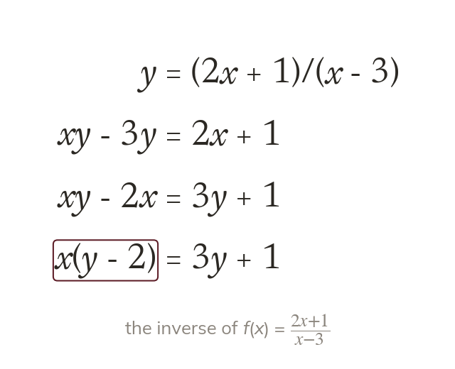
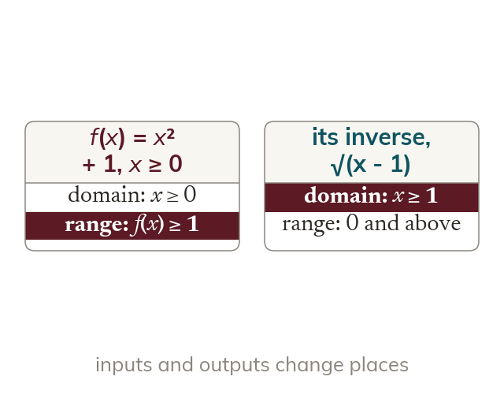
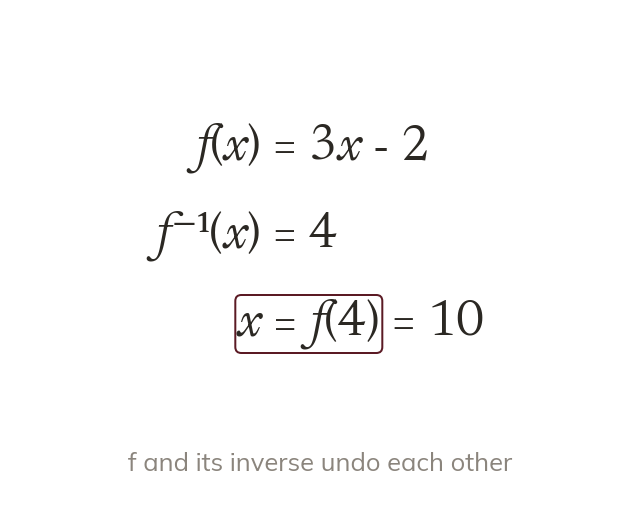
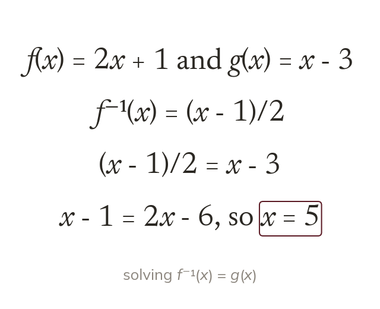

x in two places
When x appears twice, the x terms are collected on one side. Then x is factorised out and freed by dividing.
Some rules hide x in two places, so no single run backwards through the steps will undo them. Today's inverses use the subject-twice method, and inverses turn into a quick way to solve equations.
Work down the page at your own pace. Write every answer in your book first, then click to check it.
Read each card, then follow the worked examples one step at a time.

When x appears twice, the x terms are collected on one side. Then x is factorised out and freed by dividing.

The inverse swaps every input with its output. So the domain of f⁻¹ is the range of f.
Pick an answer. If it's wrong, the feedback tells you which mistake it was.
Read each card, then follow the worked examples one step at a time.

If f⁻¹(x) = 4, then x is the output of f at 4. So x = f(4), with no inverse needed.

An equation can mix inverses and composites. Each expression is found first, then the equation is solved.
Pick an answer. If it's wrong, the feedback tells you which mistake it was.
Finished? Next lesson: 11H.9.8 Reading Functions from Graphs.
Log in, then search for a code to practise that skill.
Videos, worksheets and more on each part of this lesson.